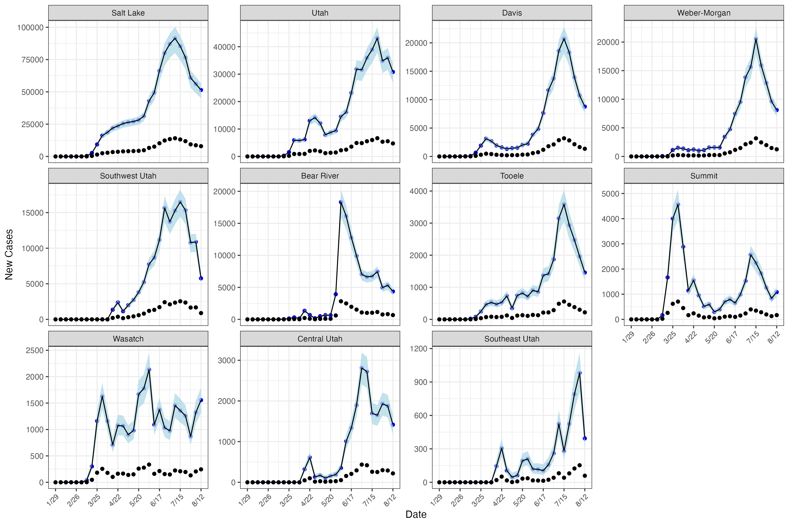

| Detection Probability | Average Error (%) | Coverage | 90% CrI Width |
|---|---|---|---|
| Low (0.15) | 0.002 (1.3%) | 0.880 | 0.010 |
| Medium (0.25) | 0.004 (0.5%) | 0.875 | 0.016 |
| High (0.50) | 0.007 (2.8%) | 0.915 | 0.032 |
Estimating Covid-19 Dynamics and disease ascertainment rate using an approximation to the discrete stochastic SEIR Model
1 Introduction
Unobservable individual-level heterogeneity in contact patterns, susceptibility and propensity to get tested are hallmark characteristics of infectious disease transmission and case reporting (Lloyd-Smith et al. 2005) (need more here about heterogeneity in susceptiblity and reporting). Such unobservable heterogeneity suggests that models of population-level infectious disease transmission should incorporate stochastic elements in both the state and observation processes (maybe cite a paper about POMP here). At the same time, the COVID-19 pandemic recorded disease surveillance data stratified by date, county, age and sex, which putatively allowed for models to incorporate shared spatio-temporal and demographic heterogeneity in order to characterize the nuances of local transmission. Unfortunately, building such structure into stochastic transmission models is challenging due to the computational burden of integrating over latent discrete state spaces.
Recent innovations in addressing the computational burden of fitting complex stochastic transmission models include linear noise approximations or LNA (Fintzi, Wakefield, and Minin 2022), particle filtering and iterated filtering (Li et al. 2024), Dirichlet distributed compartment models (Zhou et al. 2020), and exact marginalization using Laplace Transformations (Ho, Crawford, and Suchard 2018). Despite these innovations, there are limitations to each approach. The LNA approach approximates increments of a continuous-time stochastic-disease-compartment-model with an exponentiated multivariate Gaussian; a limitation to this approach is that the trajectories don’t necessarily adhere to the population limits, namely that cumulative infections must be less than or equal to the population size. This issue may occur at the tail end of an epidemic. Ideally, approximate inference methods for stochastic compartment models would respect the natural constraints imposed by finitely-sized populations.
Under-ascertainment of disease cases in surveillance data further exacerbates these challenge as models must also contend with the complication of biased measurement error. Each so-called line-listing reported by a state health agency typically represents a symptomatic case of the disease of interest or an asymptomatic case that was identified in subsequent contact tracing. Under-counting may result from asymptomatic cases that go unreported or lack of access to testing, both of which led to deflated case counts during the COVID-19 pandemic. Thus, effective models for transmission dynamics must incorporate a factor to account for under-counting.
Various approaches have been developed in order to estimate disease ascertainment rates in infectious disease data including seroprevalence studies (Taylor et al. 2023; Samore et al. 2021), multiplier models (Reese et al. 2021), back-calculation from deaths or hospitalizations, and most commonly, dynamic transmission models or compartment models which jointly estimate disease dynamics and disease ascertainment rate (Deo and Grover 2021; Chitwood et al. 2022). These dynamic transmission models are typically ODE-based models, which correspond to large-population limits of more realistic stochastic transmission models with discrete state spaces (Keeling and Rohani 2008).
We address both of these problems by developing a novel continuous stochastic approximation to a discrete-time stochastic compartment model. Our contribution is three-fold:
We allow for over-dispersed state transitions via beta-binomial random variables, while learning the extent of the over-dispersion.
The model handles the complexity of recent surveillance data via geography-specific and time-varying transmission rate using a hierarchical AR(1) process, again with unknown hyperparameters.
In order to make fitting these models feasible, we do Bayesian inference in order to take advantage of strong prior information on epidemiological parameters in the context of COVID-19.
The continuous approximation allows tractable computation through the use of of modern Markov Chain Monte Carlo approaches like the adaptive Hamiltonian Monte Carlo algorithm implemented in Stan.
In Section 2 we introduce our model and the continuous approximation of the discrete time stochastic process, while in Section 3 we investigate the finite sample operating characteristics via a simulation study under varying degrees of underreporting. Section 4 applies our model to COVID-19 data from the first year of the COVID-19 pandemic in Utah, and in Section 5 we discuss our contribution.
2 Methods
We fit a stochastic model on weekly new case counts across 11 health districts in Utah based on the SEIR (Susceptible–Exposed–Infected–Removed) compartmental model used to simulate Covid-19 infections. Given the complexity of Covid-19 case report data due to shifting policy and safety precautions, our approach required flexibility in the dynamics between compartments over time and in space. Specifically, we fit a model which allowed the force of infection to change over time and for it and the rate of movement between E and I compartments and I and R compartments to differ between districts. Finally, our model does not assume that the dynamics in the SEIR compartmental model start at the same time as cases reported in Utah at the district level do not start in the same week.
2.1 Model Formulation
We assume incident cases of Covid-19 follow a stochastic SEIR process with underreporting and overdispersed process noise. Let \(N_i\) be the total population at risk at time 1 for district \(i\). Let \(S_{it}\), \(E_{it}\), \(I_{it}\) denote susceptible, exposed, and infected populations. Let \(SE_{it}\), \(EI_{it}\), \(IR_{it}\) be transitions. Each district has a first reporting time \(f_i\).
\[ \begin{aligned} I_{if_i} &= c_{f_i},\\ EI_{if_i} &= I_{if_i},\\ S_{if_i} &= N_i - EI_{if_i}. \end{aligned} \]
For \((t > f_i)\):
\[ \begin{aligned} SE_{it} &\sim \text{Binomial}\!\Bigl(S_{it-1},\,1 - \exp\!\bigl(-\tfrac{\beta_{it}I_{it-1}}{N}\bigr)\Bigr),\\ EI_{it} &\sim \text{BetaBinomial}\!\bigl(E_{it-1},\,1 - \exp(-\eta_i),\rho_{EI}\bigr),\\ IR_{it} &\sim \text{BetaBinomial}\!\bigl(I_{it-1},\,1 - \exp(-\gamma_i),\rho_{IR}\bigr),\\ S_{it} &= S_{it-1} - SE_{it},\\ E_{it} &= \begin{cases} SE_{it}, & t = f_i + 1,\\ E_{it-1} + SE_{it} - EI_{it}, & t > f_i + 1 \end{cases}\\ I_{it} &= I_{it-1} + EI_{it} - IR_{it},\\ ii_{it} &\sim \text{Binomial}\!\bigl(EI_{it},\,p\bigr). \end{aligned} \]
We assume imperfect detection with constant detection probability (p). A supplemental model uses a beta-binomial observation process.
Transmission follows:
\[ \begin{aligned} \log{\beta_{it}} &\sim \text{Normal}(B_{it}, \tau^2) \\ B_{it} &= \phi B_{i,t-1} + \sigma \epsilon_{it}, \quad t>1 \end{aligned} \]
where \(\epsilon_{it} \sim \text{Normal}(0,1)\).
2.2 Hamiltonian Monte Carlo Approximation
Since NUTS requires gradients, discrete latent variables are approximated by continuous processes. In the Stan implementation we replace the discrete Binomial and Beta-Binomial latent transitions with continuous transition proportions modeled on the logit scale as Normal random variables, and recover counts by multiplying those proportions by compartment sizes. Variances for the logit-normal approximations are matched to the Binomial/Beta-Binomial moments via the delta method. Observed case counts are modeled using a Gaussian approximation to the Binomial (implemented as ii ~ normal(p * EI, sqrt(EI * p * (1 - p)))).
First, binomial detection is approximated by Gaussian distributions (B. Brintz, Fuentes, and Madsen 2018; B. J. Brintz, Madsen, and Fuentes 2023).
Second, transitions are modeled on the proportion scale by dividing by \(N_i\). Let lowercase letters denote proportions.
We approximate \(se_{it}, ei_{it}, ir_{it}\) with scaled inverse-logits of normal random variables matched on mean and variance (see Appendix Section Section 7.1.1). The AR(1) on \log\beta is initialized at its stationary distribution in Stan using \[\log\beta_{t_0} = \frac{\mu}{1-\phi} + \frac{\sigma}{\sqrt{1-\phi^2}} z_1\] and the AR(1) coefficient is reparameterized as \(\phi = 2\,\text{inv\_logit}(v_{\text{raw}}) - 1\) to constrain it to \((-1,1)\).
3 Simulating Underreporting
We used simulated data to assess model performance in recovering true parameters and states. Our simulations mimicked the structure of the Utah health district data used in our case study. We simulated 30 weeks of data for 11 districts with known parameters. The known parameters were based on random draws from the Utah data model fit. However, we varied the ascertainment problability (\(p=0.15, 0.25, 0.50\)), simulating 200 observed case counts per setting, used true health district population data. Across simulated ascertainment probabilities, we found the model recovered parameters well with low average error, high coverage, and reasonable credible interval widths across all detection probabilities. Higher detection probabilities led to worsened parameter recovery (Table 1).
While our case study model fit had no divergences, the simulation study had divergences across detection probabilities (see the first supplemental table in the appendix, Table 2). On average, there were low divergence rates across all detection probabilities, with higher rates at higher detection probabilities . Higher detection probabilities likely increased posterior curvature in the joint observation-process model, especially through the coupling between the detection fraction and latent incident infections, leading to slightly more divergent transitions.
4 Covid-19 Case Study using Utah Data
Covid-19’s incubation period, during which individuals are infected but not infectious, cannot be captured by the standard SIR model (Susceptible–Infected–Recovered). As a result SEIR models (Susceptible–Exposed–Infected–Recovered), which allow for a pre-infectious incubation period, align more closely with Covid-19’s biology. As a result, these compartment models became the main models for Covid-19 projections during the pandemic (Yang et al. 2020). Although the SEIR model leads to more accurate timing of outbreak progression by incorporating the pre-infectious latency period, it adds to the number of dynamics parameters that must be estimated without additional data supporting those estimations. Also, these models do not directly account for imperfect detection. Various models formulations, both stochastic and deterministic, have been devised to include compartments for both ascertained and un-ascertained infecteds, allowing for the estimation of under-ascertainment and differing rates of infectiousness of these compartments (Hao et al. 2020; Chitwood et al. 2022).
We fit the model to 30 weeks of data from 11 health districts in Utah. The overall posterior mean disease ascertainment rate was 0.16 (90% CrI: 0.14–0.17), indicating substantive under-ascertainment of infections during the study period. Weekly posterior estimates show the effect of under-ascertainment on observed case counts (Figure 1). Our estimated disease ascertainment rate of 16% (90% CrI: 14% to 17%) is consistent with other early-pandemic under-ascertainment estimates, though direct comparison requires caution because target populations, time periods, and estimands differ. In Utah, Havers et al. (2020) estimated roughly 10.5 infections per reported case among adults statewide by early May 2020, implying a detection fraction near 9.5%, while Samore et al. (2021) estimated a 40% detection fraction in four urban Utah counties during May-June 2020. Nationally, Chitwood et al. (2022) estimated a median state-level ascertainment of 13.2% during March-May 2020. Our estimate of 16% is in line with these estimates, though differences in time periods, geographic scope, and methods make direct comparisons difficult.
The hierarchical AR(1) structure on log-beta captured changes in transmission intensity over time with an estimated mean (\(B_{it}\)) of 0.11 (90% CrI: -0.05-0.27) and standard deviation (\(\sigma\)) of 0.54 (90% CrI: 0.43-0.66). In addition to AR(1) correlated (\(\phi\)=0.81 (90% CrI: 0.72-0.88)) transmission, we observed heterogeneity across health districts in timing of epidemic growth, driven by differences in exposure stage to infection stage with estimates between 0.26 and 0.87 and recovery rate between 0.2 and 0.68 between districts with beta-binomial overdispersion parameters of 0.01 (90% CrI: 0-0.01) and 0.77 (90% CrI: 0.43-0.98), respectively.
Model diagnostics were favorable: no divergent transitions were observed and E-BFMI was within 0.1 of 1 for all chains. Together these results indicate a consistent signal of under-detection across Utah with temporal and spatial variation that our hierarchical model can capture.

5 Discussion
We developed a stochastic SEIR model using a continuous approximation to discrete transitions to estimate the disease ascertainment rate of Covid-19 in Utah health districts. Our model estimated a disease ascertainment rate of 16% (90% CrI: 14–17%), indicating substantial under-ascertainment during the study period. The hierarchical AR(1) structure on transmission rates effectively captured temporal changes and spatial heterogeneity across districts.
The disease ascertainment rate of 16% indicates that that weekly incident reported cases are only a fraction of the true number of infections (E -> I). This finding aligns with prior studies that have reported significant under-ascertainment of Covid-19 infections, particularly during the early stages of the pandemic when testing resources were limited (Taylor et al. 2023; Samore et al. 2021). Our particular estimate is applies to this specific reporting system and 30 week time period during the beginning of the pandemic in Utah, and may not generalize to other locations or time periods due to changes in testing availability, public health policies, and population behavior. Underreporting is a composite of asymptomatic infections, testing access and behavior, and reporting practices, not just biological symptoms.
A classic trade-off in compartmental modeling is between model complexity and parameter identifiability. The SEIR model adds complexity by incorporating an exposed (E) compartment, which captures the incubation period of Covid-19. Our version additionally, incorporates the detection fraction moving from the E to I phase. Identifiability issues mean that higher transmission and lower detection can resemble lower transmission and higher detection. Our model addresses this challenge by leveraging hierarchical structures (partial pooling) across districts, and mechanistic movement between compartments, while maintaining largely loose priors on parameters.
Our simulation study demonstrated the model’s ability to recover true parameters across varying detection probabilities, with improved performance at higher detection rates. While the case study fit showed no divergences, the simulation study revealed low divergence rates, particularly at higher detection probabilities.
The beta-binomial transitions between compartments allowed for overdispersion in the transition process, capturing heterogeneity in transmission dynamics which can avoid overly-confident inference and absorb mild misspecification of the transition process. The estimate for the overdispersion parameter from S to E was very close to 0, implies that the binomial model was sufficient for that transition and that time to infection from exposure was consistent across time, which aligns with clinical understanding of Covid-19 infection. The overdispersion parameters for E to I and I to R were higher, indicating more variability in those transitions.
6 Notes
End of April for draft ready to submit to Biometrics…
These are the first steps: Rob - Flesh out intro with information on SIR/SEIR/tSIR models in methods
Rob - change the way we introduce the model
Ben - Edit this part: Results re-organize so simulation is first and discuss parameters in case study relative to other studies
7 Appendix
7.1 Continuous Approximation of Discrete Transitions
7.1.1 Inverse Logit Calculation
\[ \begin{aligned} \mathbb{E}\left[\frac{SE_t}{N}\right] &= s_{t-1} (1 - \exp(-\beta i_{t-1})), & \quad \text{Var}\left(\frac{SE_t}{N}\right) &= \frac{s_{t-1}}{N} \exp(-\beta i_{t-1})(1 - \exp(-\beta i_{t-1})) \\ \mathbb{E}\left[\frac{EI_t}{N}\right] &= e_{t-1} (1 - \exp(-\eta)), & \quad \text{Var}\left(\frac{EI_t}{N}\right) &= \frac{e_{t-1}}{N} \exp(-\eta)(1 - \exp(-\eta)) \\ \mathbb{E}\left[\frac{IR_t}{N}\right] &= i_{t-1} (1 - e^{-\gamma}), & \quad \text{Var}\left(\frac{IR_t}{N}\right) &= \frac{i_{t-1}}{N} e^{-\gamma}(1 - e^{-\gamma}) \end{aligned} \]
Let \(se_t\), \(ei_t\), and \(ir_t\) be random variables with bounds \([0, s_{t-1}]\), \([0, e_{t-1}]\), and \([0, i_{t-1}]\), respectively. We need to find \(u_t\), \(v_t\), and \(w_t\) distributed on \([0, 1]\) such that \(se_t = u_t s_{t-1}\), \(ei_t = v_t e_{t-1}\), and \(ir_t = i_{t-1} w_t\) with the same mean and variance.
\[ \begin{aligned} \mathbb{E}[s_{t-1} u_t] &= s_{t-1} \mathbb{E}[u_t] = s_{t-1}(1 - \exp(-\beta i_{t-1})) \\ \text{Var}(s_{t-1} u_t) &= s_{t-1}^2 \text{Var}(u_t) = \frac{s_{t-1}}{N} \exp(-\beta i_{t-1})(1 - \exp(-\beta i_{t-1})) \\ \mathbb{E}[e_{t-1} v_t] &= e_{t-1} \mathbb{E}[v_t] = e_{t-1}(1 - \exp(-\eta)) \\ \text{Var}(e_{t-1} v_t) &= e_{t-1}^2 \text{Var}(v_t) = \frac{e_{t-1}}{N} \exp(-\eta)(1 - \exp(-\eta)) \\ \mathbb{E}[i_{t-1} w_t] &= i_{t-1} \mathbb{E}[w_t] = i_{t-1}(1 - e^{-\gamma}) \\ \text{Var}(i_{t-1} w_t) &= i_{t-1}^2 \text{Var}(w_t) = \frac{i_{t-1}}{N} e^{-\gamma}(1 - e^{-\gamma}) \end{aligned} \]
Solving for \(\mathbb{E}[u_t]\), \(\text{Var}(u_t)\), \(\mathbb{E}[v_t]\), \(\text{Var}(v_t)\), \(\mathbb{E}[w_t]\), and \(\text{Var}(w_t)\) implies
\[ \begin{aligned} \mathbb{E}[u_t] &= (1 - \exp(-\beta i_{t-1})) \\ \text{Var}(u_t) &= \frac{1}{s_{t-1} N} \exp(-\beta i_{t-1})(1 - \exp(-\beta i_{t-1})) \\ \mathbb{E}[v_t] &= (1 - \exp(-\eta)) \\ \text{Var}(v_t) &= \frac{1}{e_{t-1} N} \exp(-\eta)(1 - \exp(-\eta)) \\ \mathbb{E}[w_t] &= (1 - e^{-\gamma}) \\ \text{Var}(w_t) &= \frac{1}{i_{t-1} N} e^{-\gamma}(1 - e^{-\gamma}) \end{aligned} \]
What we could do is to take \(\tilde{u}_t\), \(\tilde{v}_t\), \(\tilde{w}_t \sim \text{Normal}\) and let \(u_t = \text{inv\_logit}(\tilde{u}_t)\), \(v_t = \text{inv\_logit}(\tilde{v}_t)\), and \(w_t = \text{inv\_logit}(\tilde{w}_t)\).
The downside of this approach is that the expectation of the inverse logit of a normal does not have an analytic form, but we could approximate with the Delta method. Let
\[ \tilde{u}_t \sim \text{Normal}(\mu_u, \sigma^2_u), \tilde{v}_t \sim \text{Normal}(\mu_v, \sigma^2_v), \tilde{w}_t \sim \text{Normal}(\mu_w, \sigma^2_w). \]
We need to find \(\mu_u\), \(\sigma^2_u\), \(\mu_v\), \(\sigma^2_v\), \(\mu_w\), \(\sigma^2_w\) such that
\[ \begin{aligned} \mathbb{E}[\text{expit}(\tilde{u}_t)] \approx (1 - \exp(-\beta i_{t-1})), &\quad \text{Var}(\text{expit}(\tilde{u}_t)) \approx \frac{1}{s_{t-1} N} \exp(-\beta i_{t-1})(1 - \exp(-\beta i_{t-1})) \\ \mathbb{E}[\text{expit}(\tilde{v}_t)] \approx (1 - \exp(-\eta)), \quad & \text{Var}(\text{expit}(\tilde{v}_t)) \approx \frac{1}{e_{t-1} N} \exp(-\eta)(1 - \exp(-\eta)) \\ \mathbb{E}[\text{expit}(\tilde{w}_t)] \approx (1 - e^{-\gamma}), \quad & \text{Var}(\text{expit}(\tilde{w}_t)) \approx \frac{1}{i_{t-1} N} e^{-\gamma}(1 - e^{-\gamma}) \end{aligned} \]
Using the delta method gives that
\[ \begin{aligned} \mathbb{E}[\text{expit}(\tilde{u}_t)] \approx \text{expit}(\mu_u), & \quad \text{Var}(\text{expit}(\tilde{u}_t)) \approx \sigma_u^2 (\text{expit}(\mu_u)^\prime)^2 \\ \mathbb{E}[\text{expit}(\tilde{v}_t)] \approx \text{expit}(\mu_v), & \quad \text{Var}(\text{expit}(\tilde{v}_t)) \approx \sigma_v^2 (\text{expit}(\mu_v)^\prime)^2 \\ \mathbb{E}[\text{expit}(\tilde{w}_t)] \approx \text{expit}(\mu_w), &\quad \text{Var}(\text{expit}(\tilde{w}_t)) \approx \sigma_w^2 (\text{expit}(\mu_w)^\prime)^2 \end{aligned} \]
This leads to the following parameters:
\[ \begin{aligned} \mu_u &= \text{logit}(1 - \exp(-\beta i_{t-1})) \\ \sigma_u^2 &= \frac{1}{s_{t-1} N} \frac{\exp(-\beta i_{t-1})(1 - \exp(-\beta i_{t-1}))}{((1 - \text{expit}(\mu_u))\text{expit}(\mu_u))^2} \\ &= \frac{1}{\exp(-\beta i_{t-1})(1 - \exp(-\beta i_{t-1})) s_{t-1} N} \\ \mu_v &= \text{logit}(1 - \exp(-\eta)) \\ \sigma_v^2 &= \frac{1}{e_{t-1} N} \frac{\exp(-\eta)(1 - \exp(-\eta))}{((1 - \text{expit}(\mu_v))\text{expit}(\mu_v))^2} \\ &= \frac{1}{\exp(-\eta)(1 - \exp(-\eta)) e_{t-1} N} \\ \mu_w &= \text{logit}(1 - e^{-\gamma}) \\ \sigma_w^2 &= \frac{1}{i_{t-1} N} \frac{e^{-\gamma}(1 - e^{-\gamma}))}{((1 - \text{expit}(\mu_w))\text{expit}(\mu_w))^2} \\ &= \frac{1}{e^{-\gamma}(1 - e^{-\gamma})) i_{t-1} N} \end{aligned} \]
7.2 Divergence Summary
| Detection Probability | Mean (SD) | 2.5th | 25th | 50th | 75th | 97.5th |
|---|---|---|---|---|---|---|
| Low (0.15) | 0.024 (0.062) | 0 | 0 | 0.002 | 0.015 | 0.226 |
| Medium (0.25) | 0.031 (0.073) | 0 | 0 | 0.005 | 0.028 | 0.185 |
| High (0.50) | 0.039 (0.095) | 0 | 0 | 0.004 | 0.026 | 0.281 |
References
Brintz, Ben J, Lisa Madsen, and Claudio Fuentes. 2023. “A Spatially Explicit n-Mixture Model for the Estimation of Disease Prevalence.” Statistical Modelling 23 (1): 31–52.
Brintz, Ben, Claudio Fuentes, and Lisa Madsen. 2018. “An Asymptotic Approximation to the N-Mixture Model for the Estimation of Disease Prevalence.” Biometrics 74 (4): 1512–18.
Chitwood, Melanie H, Marcus Russi, Kenneth Gunasekera, Joshua Havumaki, Fayette Klaassen, Virginia E Pitzer, Joshua A Salomon, et al. 2022. “Reconstructing the Course of the COVID-19 Epidemic over 2020 for US States and Counties: Results of a Bayesian Evidence Synthesis Model.” PLOS Computational Biology 18 (8): e1010465.
Deo, Vishal, and Gurprit Grover. 2021. “A New Extension of State-Space SIR Model to Account for Underreporting–an Application to the COVID-19 Transmission in California and Florida.” Results in Physics 24: 104182.
Fintzi, Jonathan, Jon Wakefield, and Vladimir N. Minin. 2022. “A Linear Noise Approximation for Stochastic Epidemic Models Fit to Partially Observed Incidence Counts.” Biometrics 78 (4): 1530–41. https://doi.org/10.1111/biom.13538.
Hao, Xingjie, Shanshan Cheng, Degang Wu, Tangchun Wu, Xihong Lin, and Chaolong Wang. 2020. “Reconstruction of the Full Transmission Dynamics of COVID-19 in Wuhan.” Nature 584 (7821): 420–24.
Havers, Fiona P, Carrie Reed, Travis Lim, Joel M Montgomery, John D Klena, Aron J Hall, Alicia M Fry, et al. 2020. “Seroprevalence of Antibodies to SARS-CoV-2 in 10 Sites in the United States, March 23-May 12, 2020.” JAMA Internal Medicine 180 (12): 1576–86.
Ho, Lam Si Tung, Forrest W. Crawford, and Marc A. Suchard. 2018. “Direct Likelihood-Based Inference for Discretely Observed Stochastic Compartmental Models of Infectious Disease.” The Annals of Applied Statistics 12 (3). https://doi.org/10.1214/18-AOAS1141.
Keeling, Matt J, and Pejman Rohani. 2008. Modeling Infectious Diseases in Humans and Animals. Princeton university press.
Li, Jifan, Edward L. Ionides, Aaron A. King, Mercedes Pascual, and Ning Ning. 2024. “Inference on Spatiotemporal Dynamics for Coupled Biological Populations.” Journal of The Royal Society Interface 21 (216): 20240217. https://doi.org/10.1098/rsif.2024.0217.
Lloyd-Smith, J. O., S. J. Schreiber, P. E. Kopp, and W. M. Getz. 2005. “Superspreading and the Effect of Individual Variation on Disease Emergence.” Nature 438 (7066): 355–59. https://doi.org/10.1038/nature04153.
Reese, Heather, A Danielle Iuliano, Neha N Patel, Shikha Garg, Lindsay Kim, Benjamin J Silk, Aron J Hall, Alicia Fry, and Carrie Reed. 2021. “Estimated Incidence of Coronavirus Disease 2019 (COVID-19) Illness and Hospitalization—United States, February–September 2020.” Clinical Infectious Diseases 72 (12): e1010–17.
Samore, Matthew H, Adam Looney, Brian Orleans, Tom Greene, Nathan Seegert, Julio C Delgado, Angela Presson, et al. 2021. “Probability-Based Estimates of Severe Acute Respiratory Syndrome Coronavirus 2 Seroprevalence and Detection Fraction, Utah, USA.” Emerging Infectious Diseases 27 (11): 2786.
Taylor, Kevin M, Keersten M Ricks, Paul A Kuehnert, Angelia A Eick-Cost, Mark R Scheckelhoff, Andrew R Wiesen, Tamara L Clements, et al. 2023. “Seroprevalence as an Indicator of Undercounting of COVID-19 Cases in a Large Well-Described Cohort.” AJPM Focus 2 (4): 100141.
Yang, Zifeng, Zhiqi Zeng, Ke Wang, Sook-San Wong, Wenhua Liang, Mark Zanin, Peng Liu, et al. 2020. “Modified SEIR and AI Prediction of the Epidemics Trend of COVID-19 in China Under Public Health Interventions.” Journal of Thoracic Disease 12 (3): 165.
Zhou, Yiwang, Lili Wang, Leyao Zhang, Lan Shi, Kangping Yang, Jie He, Bangyao Zhao, William Overton, Soumik Purkayastha, and Peter Song. 2020. “A Spatiotemporal Epidemiological Prediction Model to Inform County-Level COVID-19 Risk in the United States.” Harvard Data Science Review, June. https://doi.org/10.1162/99608f92.79e1f45e.